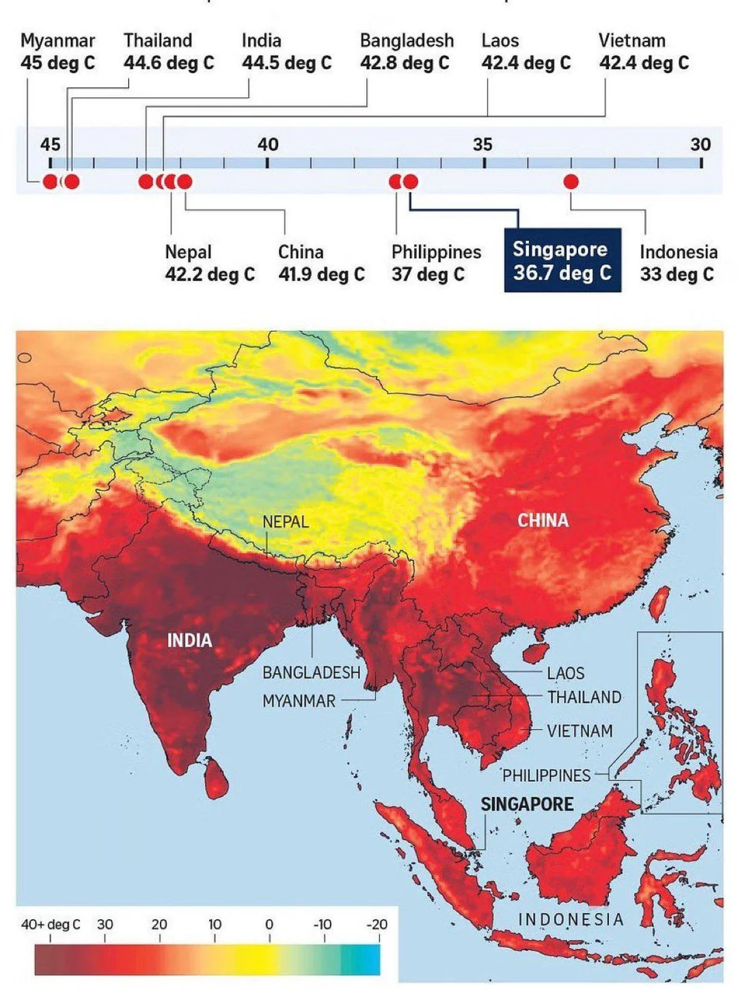

რა თქმა უნდა, ვიცით, რომ ბუნებრივ უბედურ შემთხვევებს შესაძლოა ადამიანმა შეძლოს და თავი აარიდოს, ან სამწუხაროდ პირიქით, ვერ აარიდოს. თუმცა, გასათვალისწინებელია ისიც, რომ ყველა ბუნებრივი კატასტროფა არ არის გამოწვეული თავისით, ხანდახან ადამიანის არასწორი და ეგოისტური საქმიანობა უბიძგებს აქამდე და მის უგუნურობას შესაძლოა ადამიანების სიცოცხლე ემსხვერპლოს. ეს ხდება იმიტომ, რომ ბევრს არ აქვს საკმარისი განათლება იმაზე, თუ რა ზიანი შეიძლება მოჰქონდეს გადაჭარბებულ მუშაობას. ქვემოთ იქნება მოყვანილი მაგალითები როგორც საქართველოდან, ასევე მსოფლიოს სხვადასხვა წერტილებიდან.
1960-1990 წლების პერიოდის შემდეგ დათბობის ტენდენცია თითქმის გაორმაგდა, აზია თბება უფრო სწრაფად, ვიდრე გლობალური საშუალო, გაზრდილია მსხვერპლი და ეკონომიკური ზარალი წყალდიდობების, ქარიშხლებისა და უფრო ძლიერი სიცხის გამო. რეგიონის ბევრმა ნაწილმა განიცადა ექსტრემალური სიცხე 2023 წელს. განსაკუთრებით მაღალი ტემპერატურა დაფიქსირდა დასავლეთ ციმბირიდან ცენტრალურ აზიამდე და აღმოსავლეთ ჩინეთიდან იაპონიამდე. იაპონიამ და ყაზახეთმა რეკორდული თბილი წელი განიცადეს. პაკისტანი: ტემპერატურა 52 გრადუსზე მაღლა აიწია პაკისტანის სამხრეთ პროვინცია სინდში, რაც ზაფხულის ყველაზე მაღალი მაჩვენებელია და ქვეყნის რეკორდთან ახლოს მიმდინარე სიცხის ფონზე. აზიაში ექსტრემალური ტემპერატურა გასულ თვეში გაუარესდა, სავარაუდოდ, ადამიანის მიერ გამოწვეული კლიმატის ცვლილების შედეგად, განაცხადა საერთაშორისო მეცნიერთა ჯგუფმა. მსგავსი შემთხვევები კიდევ ბევრია. წყაროებითვის და მეტი ინფორმაციისთვის გაესაუბრეთ ჩატბოტს.
